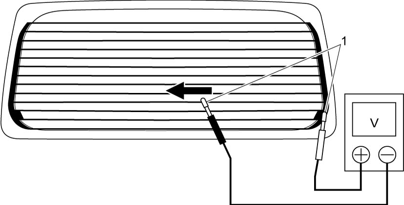

9E
| Rear Defogger Inspection |
NOTE:
Wind aluminum foil around tester probes when checking continuity and voltage of rear defogger lines.
1)Start engine, turn on rear defogger (and mirror heater) switch and measure voltage between center of each wire and ground.
Rear defogger voltage at center of each wire
4 – 6 V
2)Check wires whose measurement is out of standard.

a)Apply both positive and negative probes of tester to positive side of rear defogger line.
b)Move negative probe toward negative side of rear defogger line slowly.
c)Check voltage change while sliding negative probe. If voltage remains 0 V halfway and then rises to battery voltage suddenly, the line is open just before there.
d)If defect is found, repair defogger harness or replace rear end door window glass if necessary.

 "Expand image")
| 1. | Aluminum foil |